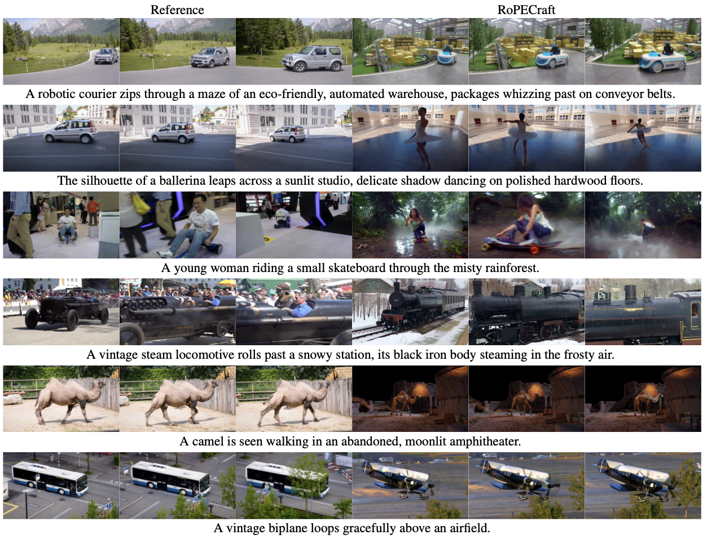
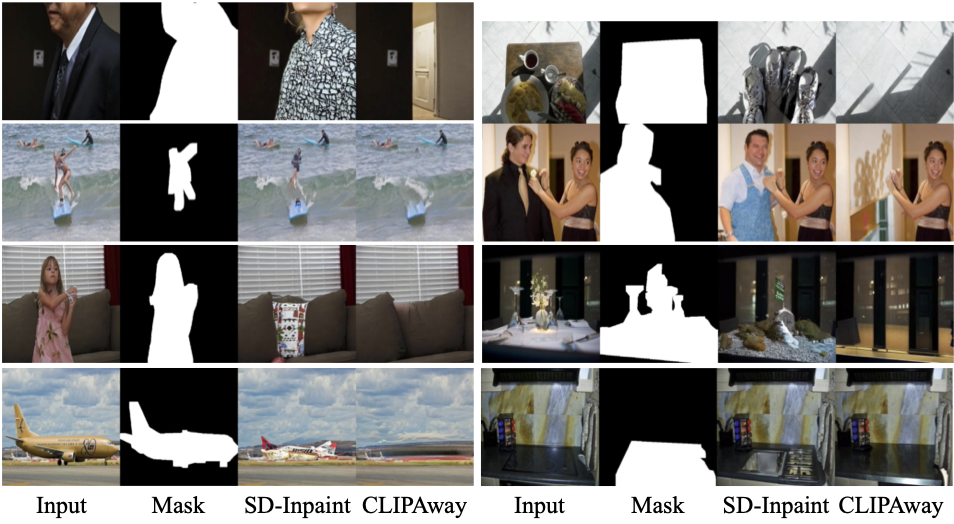
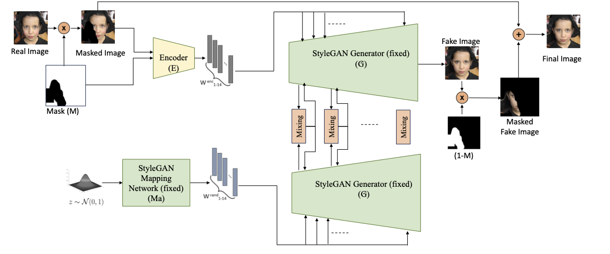

I am an incoming PhD student in Computer Science at Virginia Tech under the supervison of Pinar Yanardag. Previously, I completed my MSc in Computer Science at Bilkent University, supervised by Aysegul Dundar. My research focuses on computer vision and machine learning, especially on generative models with an emphasis on diffusion models.



Powered by Jekyll and Minimal Light theme.